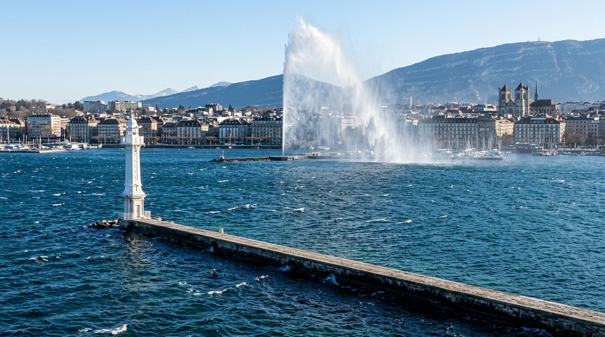

In breve
La bise è un vento freddo e secco che soffia da nord-est. Per MeteoSvizzera è il vento più caratteristico del Lemano: si instaura quando un’alta pressione copre le Isole Britanniche e una bassa pressione l’Italia. Solleva onde che disturbano balneazione, paddle e gite in barca, ma fa la felicità di kitesurfisti, windsurfisti e foiler.

Da dove viene la bise?
Secondo MeteoSvizzera, la bise si instaura quando un’alta pressione copre le Isole Britanniche e una bassa pressione l’Italia. L’aria fredda viene allora incanalata dall’Altopiano svizzero, che si restringe verso ovest, e accelera arrivando sul Lemano.
Da dove soffia sul lago?
Sul Petit-Lac (lato Ginevra) e sul Grand-Lac, la bise soffia da nord-est. Sull’Haut-Lac, rallentata dalle Alpi vodesi, viene deviata verso la foce del Rodano e soffia piuttosto da nord-nord-ovest (MeteoSvizzera). La Société internationale de sauvetage du Léman (SISL) la descrive come il vento più frequente del lago e nota che la temperatura scende in fretta al suo passaggio.
Come sapere se oggi c’è la bise?
Un vento da nord-est, freddo e secco, che forma i cavalloni sul lago: è lei. In Il mio lago si parla di bise quando il vento viene da nord-est (tra 20 e 80°) e supera i 15 km/h; l’app la segnala allora in alto sullo schermo. La freccia del vento, spiaggia per spiaggia, mostra da dove soffia.
Si può fare il bagno o il paddle con la bise?
Con bise forte è meglio aspettare: solleva onde e corrente vicino alle rive esposte. Ecco i riferimenti dell’app (non sono norme ufficiali):
- Balneazione: oltre i 25 km/h di bise, il voto non supera «Così così».
- Paddle: il voto scende non appena le raffiche superano i 12 km/h, e diventa «No» oltre i 28 km/h (vedi il paddle sul Lemano).
- Gita in barca: limitata a «Così così» quando la bise supera i 25 km/h.
Perché kitesurfisti e foiler amano la bise?
Perché è un vento stabile e spesso sostenuto. Nell’app, il kitesurf è «Perfetto» tra 22 e 40 km/h di vento, il windsurf tra 20 e 40 km/h. Per il foil, una bise di almeno 25 km/h dà il voto «Perfetto»: è il vento dei downwind, le lunghe discese portate dalle onde. Più dettagli in kitesurf, windsurf e wingfoil sul Lemano.
L’acqua del lago in questo momento
La temperatura dell’acqua di ogni spiaggia è nell’app Il mio lago, aggiornata ogni tre ore.